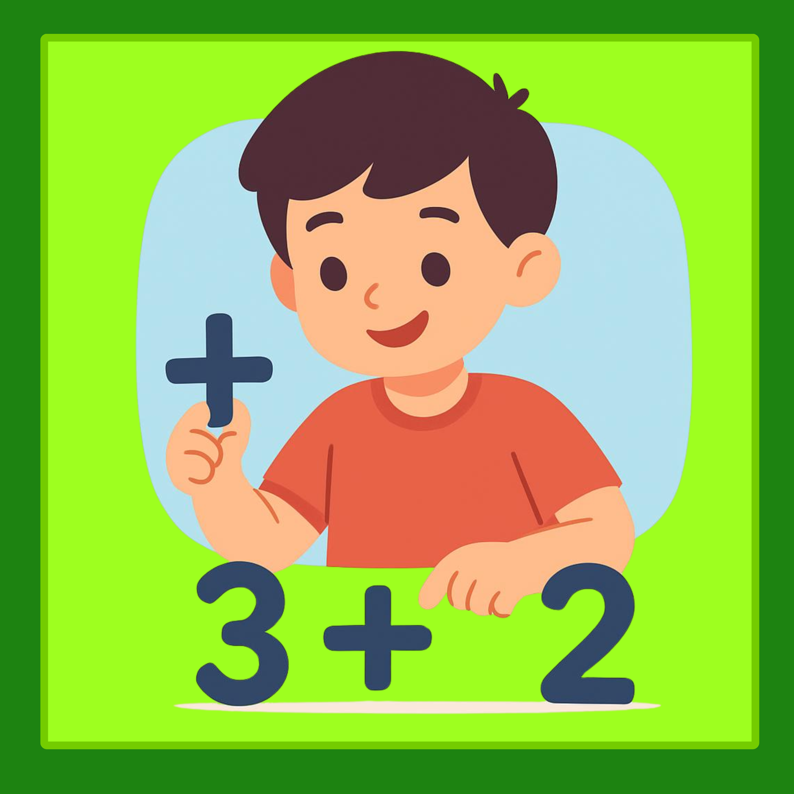
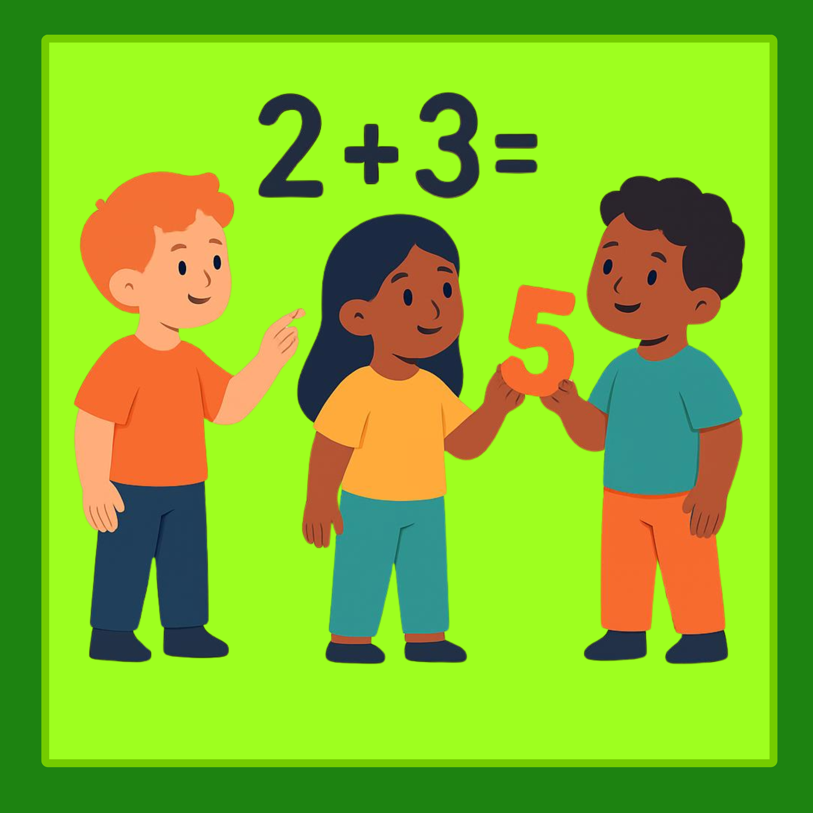
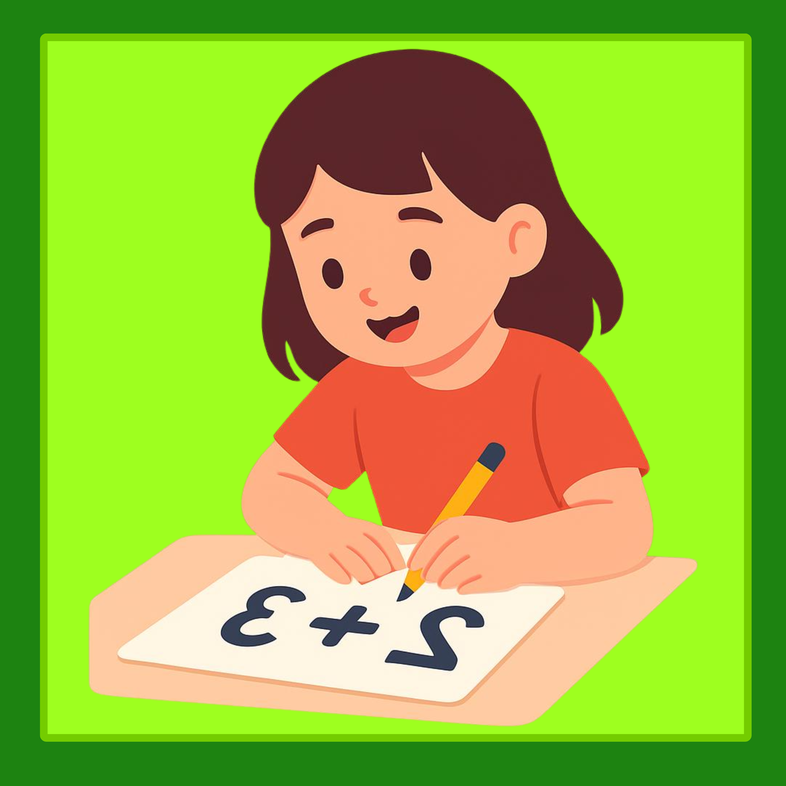
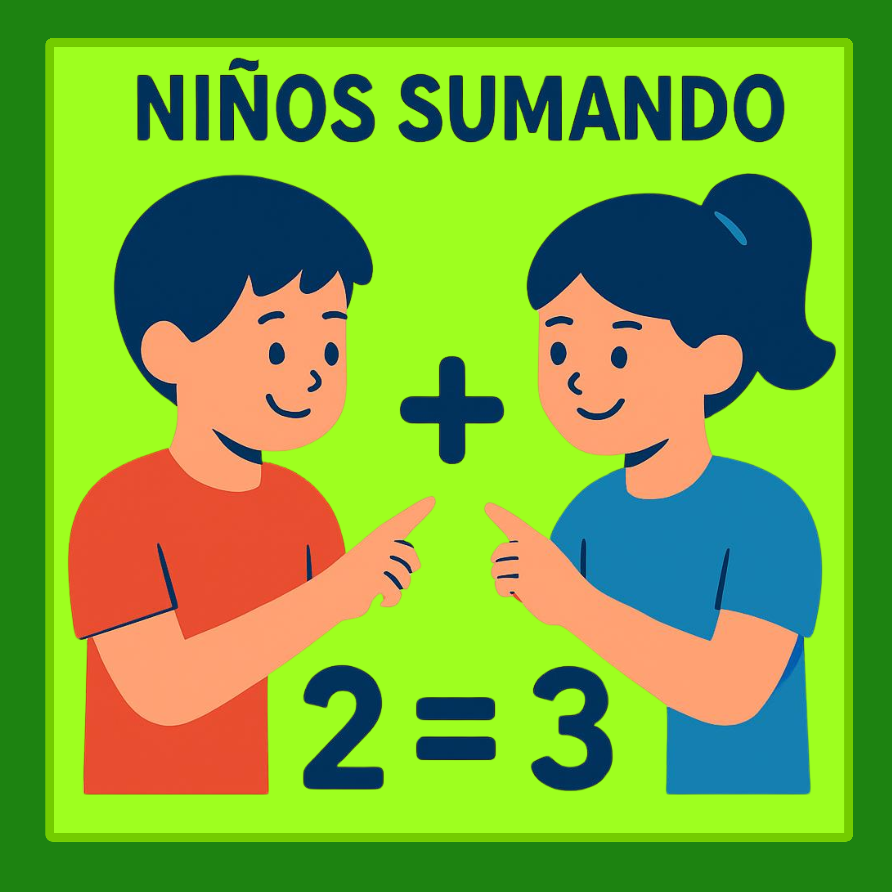

SUMA
¿QUÈ ES LA SUMA?
El género narrativo es uno de los géneros más importantes de la literatura. Es aquel que narra historias y hechos que pueden ser reales o de ficción. género narrativo es una categoría de la literatura que agrupa las obras cuya finalidad es contar una historia, es decir, narrar hechos reales o imaginarios. Estos relatos son presentados por un narrador y pueden involucrar personajes, diálogos, descripciones y un desarrollo temporal.
Relata acontecimientos que conforman una historia. Para esto, se vale de diferentes personajes, desarrolla sus personalidades, cuenta sus acciones y emociones y cómo éstas intervienen en la narración.La narrativa es un género literario, generalmente en prosa, que consiste en contar una historia. Las historias narradas pueden ser reales o ficticias, y pueden transmitirse de manera escrita u oral.


¿COMO SE SUMA?
El género narrativo tiene sus raíces en las primeras formas de comunicación humana y ha evolucionado significativamente a lo largo de la historia. Su origen puede rastrearse hasta las antiguas tradiciones orales, donde los relatos y las historias se transmitían de generación en generación.
EJEMPLOS
El género narrativo tiene sus raíces en las primeras formas de comunicación humana y ha evolucionado significativamente a lo largo de la historia. Su origen puede rastrearse hasta las antiguas tradiciones orales, donde los relatos y las historias se transmitían de generación en generación.


¿PARA QUE LO USAMOS?
Las narraciones pueden ser o no ficción.
Presencia de un narrador, quien relata los hechos. Puede o no ser parte de la historia.
Son escritos en prosa, no en verso.
Poseen una trama, una secuencia que cuenta qué sucede.
Intervienen personajes, quienes realizan las acciones narradas.
Se ubican en un tiempo y un espacio determinado, uno o varios escenarios.
Posee un lenguaje característico, un estilo narrativo elegido por el autor para contar lo sucedido.
Presencia de un narrador, quien relata los hechos. Puede o no ser parte de la historia.
Son escritos en prosa, no en verso.
Poseen una trama, una secuencia que cuenta qué sucede.